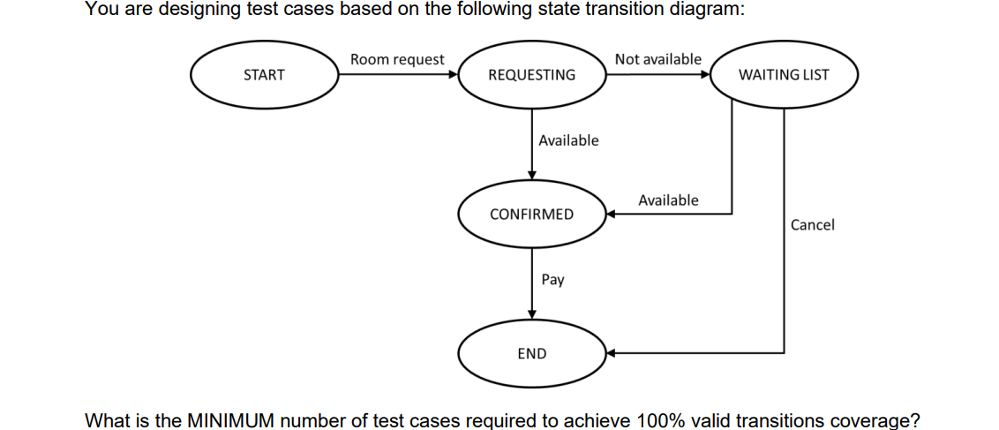

1. Which of the following is a typical test objective?
1. Mục tiêu kiểm thử điển hình là gì trong các lựa chọn sau?
2. Which of the following statements BEST describes the difference between testing and debugging?
2. Phát biểu nào sau đây mô tả TỐT NHẤT sự khác biệt giữa kiểm thử và sửa lỗi (debugging)?
3. The ‘absence-of-defects fallacy’ is one of the principles of testing. Which of the following is an example of addressing this principle in practice?
3. “Ngụy biện không có lỗi” là một trong những nguyên tắc của kiểm thử. Đâu là ví dụ về việc áp dụng nguyên tắc này trong thực tế?
4. Given the following testware:
① Coverage items
② Change requests
③ Test execution schedule
④ Prioritized test conditions
And the following test activities:
A. Test analysis
B. Test design
C. Test implementation
D. Test completion
Which of the following BEST shows the testware produced by the
activities?
4. Cho các tài liệu kiểm thử (testware) sau:
① Các mục bao phủ (Coverage items)
② Yêu cầu thay đổi (Change requests)
③ Lịch thực hiện kiểm thử (Test execution schedule)
④ Các điều kiện kiểm thử được ưu tiên (Prioritized test
conditions)
Và các hoạt động kiểm thử sau:
A. Phân tích kiểm thử (Test analysis)
B. Thiết kế kiểm thử (Test design)
C. Triển khai kiểm thử (Test implementation)
D. Kết thúc kiểm thử (Test completion)
Phương án nào mô tả ĐÚNG NHẤT testware được tạo ra bởi các hoạt
động trên?
5. Which of the following statements about the different testing roles is MOST likely to be CORRECT?
5. Phát biểu nào sau đây về các vai trò kiểm thử có khả năng ĐÚNG NHẤT?
6. Which of the following is an advantage of the whole-team approach?
6. Đâu là một lợi ích của cách tiếp cận “whole-team” (toàn đội cùng tham gia)?
7. Which of the following statements about the independence of testing is CORRECT?
7. Phát biểu nào sau đây về tính độc lập trong kiểm thử là ĐÚNG?
8. Which of the following is a good testing practice that applies to all software development lifecycles?
8. Đâu là một thực hành kiểm thử tốt áp dụng cho tất cả các mô hình vòng đời phát triển phần mềm?
9. Which of the following is an example of a test-first approach to development?
9. Đâu là một ví dụ của phương pháp phát triển “test-first” (viết test trước)?
10. Which of the following provides the BEST description of the shift-left approach?
10. Phát biểu nào sau đây mô tả ĐÚNG NHẤT về cách tiếp cận “shift-left”?
11. Which of the following is LEAST likely to occur as a result of a retrospective?
11. Điều nào sau đây ÍT có khả năng xảy ra nhất như một kết quả của buổi retrospective (họp cải tiến)?
12. Which of the following test levels is MOST likely being performed if the testing is focused on validation and is not being performed by testers?
12. Mức kiểm thử nào sau đây có khả năng CAO NHẤT đang được thực hiện nếu việc kiểm thử tập trung vào validation (xác nhận) và không do tester thực hiện?
13. The navigation system software has been updated due to it suggesting routes that break traffic laws, such as driving the wrong way down one-way streets. Which of the following BEST describes the testing that will be performed?
13. Phần mềm hệ thống định vị đã được cập nhật vì trước đó nó đề xuất các tuyến đường vi phạm luật giao thông, ví dụ như đi ngược chiều trên đường một chiều. Phương án nào sau đây mô tả ĐÚNG NHẤT loại kiểm thử sẽ được thực hiện?
14. Given the following example defects:
i. Two different parts of the design specification disagree due
to the complexity of the design
ii. A response time is too long and so makes users lose patience
iii. A path in the code cannot be reached during execution
iv. A variable is declared but never subsequently used in the
program
v. The amount of memory needed by the program to generate a
report is too high
Which of the following BEST identifies example defects that
could be found by static testing (rather than dynamic testing)?
14. Cho các ví dụ về lỗi sau:
i. Hai phần khác nhau của tài liệu thiết kế mâu thuẫn với nhau
do độ phức tạp của thiết kế
ii. Thời gian phản hồi quá lâu khiến người dùng mất kiên nhẫn
iii. Một nhánh trong mã nguồn không thể được thực thi trong quá
trình chạy
iv. Một biến được khai báo nhưng không bao giờ được sử dụng
trong chương trình
v. Lượng bộ nhớ cần để chương trình tạo báo cáo là quá cao
Phương án nào sau đây xác định ĐÚNG NHẤT các lỗi có thể được tìm
thấy bằng kiểm thử tĩnh (thay vì kiểm thử động)?
15. Which of the following is a benefit of early and frequent stakeholder feedback?
15. Đâu là một lợi ích của việc nhận phản hồi sớm và thường xuyên từ các bên liên quan (stakeholders)?
16. Given the following review types:
① Technical review
② Informal review
③ Inspection
④ Walkthrough
And the following descriptions:
A. Includes objectives such as gaining consensus, generating new
ideas, and motivating authors to improve
B. Includes objectives such as educating reviewers, gaining
consensus, generating new ideas and detecting potential defects
C. The main objective is detecting potential defects and it
requires metrics collection to support process improvement
D. The main objective is detecting potential defects and it
generates no formal documented output
Which of the following BEST matches the review types and the
descriptions?
16. Cho các loại review sau:
① Review kỹ thuật (Technical review)
② Review không chính thức (Informal review)
③ Inspection
④ Walkthrough
Và các mô tả sau:
A. Bao gồm các mục tiêu như đạt được sự đồng thuận, tạo ra ý
tưởng mới và thúc đẩy tác giả cải thiện
B. Bao gồm các mục tiêu như đào tạo reviewer, đạt được sự đồng
thuận, tạo ra ý tưởng mới và phát hiện lỗi tiềm ẩn
C. Mục tiêu chính là phát hiện lỗi tiềm ẩn và yêu cầu thu thập
số liệu để hỗ trợ cải tiến quy trình
D. Mục tiêu chính là phát hiện lỗi tiềm ẩn và không tạo ra tài
liệu chính thức
Phương án nào sau đây ghép ĐÚNG NHẤT giữa loại review và mô tả?
17. Which of the following is a factor that contributes to a successful review?
17. Yếu tố nào sau đây góp phần vào một buổi review thành công?
18. What is the MAIN difference between black-box test techniques and experience-based test techniques?
18. Sự khác biệt CHÍNH giữa kỹ thuật kiểm thử hộp đen (black-box) và kỹ thuật kiểm thử dựa trên kinh nghiệm (experience-based) là gì?
19. You are testing a PIN validator which accepts valid PINs and rejects invalid PINs. A PIN is a sequence of digits. A PIN is valid if it consists of four digits and at least two of them are different. Which of the following sets of input test data cover all equivalence partitions for this scenario?
19. Bạn đang kiểm thử một bộ xác thực PIN: chấp nhận PIN hợp lệ và từ chối PIN không hợp lệ. PIN là một chuỗi các chữ số. Một PIN hợp lệ nếu nó gồm 4 chữ số và ít nhất 2 chữ số trong đó phải khác nhau. Tập dữ liệu test đầu vào nào sau đây bao phủ tất cả các phân vùng tương đương (equivalence partitions) cho tình huống này?
20.

20. Một lập trình viên được yêu cầu triển khai quy tắc nghiệp vụ
sau:
ĐẦU VÀO: giá trị (số nguyên)
NẾU (giá trị ≤ 100 HOẶC giá trị ≥ 200) THÌ ghi “value incorrect”
NGƯỢC LẠI ghi “value OK”
Bạn thiết kế test case bằng phương pháp phân tích giá trị biên 2
giá trị (2-value boundary value analysis).
Tập giá trị test nào sau đây đạt độ bao phủ cao nhất?
21.

22.
23.

24. How can white-box testing be useful in support of black-box testing?
24. White-box testing có thể hữu ích như thế nào trong việc hỗ trợ black-box testing?
25. Consider the following list:
• Correct input not accepted
• Incorrect input accepted
• Wrong output format
• Division by zero
What test technique is MOST PROBABLY used by the tester who uses
this list when performing testing?
25. Xem xét danh sách sau:
• Dữ liệu đầu vào đúng nhưng không được chấp nhận
• Dữ liệu đầu vào sai nhưng lại được chấp nhận
• Sai định dạng đầu ra
• Chia cho 0
Kỹ thuật kiểm thử nào MOST PROBABLY (khả năng cao nhất) được sử
dụng bởi tester khi họ dùng danh sách này để thực hiện kiểm thử?
26. Which of the following BEST describes how using checklist-based testing can result in increased coverage?
26. Phát biểu nào sau đây MÔ TẢ TỐT NHẤT cách việc sử dụng kiểm thử dựa trên checklist có thể dẫn đến tăng độ bao phủ (coverage)?
27. Which of the following provides the BEST example of a scenario-oriented acceptance criterion?
27. Phát biểu nào sau đây cung cấp VÍ DỤ TỐT NHẤT về tiêu chí chấp nhận theo hướng kịch bản (scenario-oriented acceptance criterion)?
28.

28. Bạn đang sử dụng phương pháp Acceptance Test-Driven
Development và thiết kế test case dựa trên user story sau:
Là một người dùng Regular hoặc Special, tôi muốn sử dụng thẻ ra
vào điện tử của mình để truy cập các tầng cụ thể.
Tiêu chí chấp nhận:
AC1: Người dùng Regular có quyền truy cập các tầng từ 1 đến 3
AC2: Tầng 4 chỉ dành cho người dùng Special
AC3: Người dùng Special có tất cả quyền truy cập của người dùng
Regular
Test case nào là HỢP LÝ NHẤT để kiểm tra AC3?
29. Which of the following is NOT a purpose of a test plan?
29. Phát biểu nào sau đây KHÔNG phải là mục đích của test plan?
30.

31.

32. What does the test pyramid model show?
32. Mô hình tháp kiểm thử (test pyramid model) thể hiện điều gì?
33. What is the relationship between the testing quadrants, test levels and test types?
33. Mối quan hệ giữa testing quadrants (bốn góc kiểm thử), test levels (mức kiểm thử) và test types (loại kiểm thử) là gì?
34. Which of the following is an example of how product risk analysis may influence the thoroughness and scope of testing?
34. Phát biểu nào sau đây là một ví dụ về cách phân tích rủi ro sản phẩm có thể ảnh hưởng đến mức độ kỹ lưỡng (thoroughness) và phạm vi (scope) của kiểm thử?
35. Which of the following activities in the test process makes the MOST use of test progress reports?
35. Hoạt động nào sau đây trong quy trình kiểm thử sử dụng test progress reports (báo cáo tiến độ kiểm thử) NHIỀU NHẤT?
36. Which of the following is NOT an example of how configuration management supports testing?
36. Phát biểu nào sau đây KHÔNG phải là ví dụ về cách quản lý cấu hình (configuration management) hỗ trợ kiểm thử?
37.